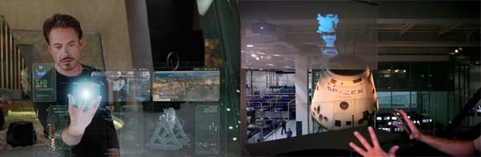

In today's world it more easy to have augmented reality be a thing much more faster and available than Virtual reality, VR.
Although this may not be real life examples but the core concept of AR in our everyday life or acititvies.
This is mainly the end goal achivement for AR. AR is the future.
In the movies Iron Man we can see Stark use his computer almost anywhere he goes expecially in his house. This is ideal vision of AR.

Aother example will be in a Anime Film call Sword art Online Ordical Scales where they use AR a the new piece of entertainemnet and daily item.